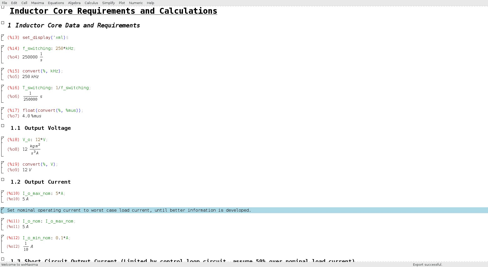

Description
Introduction
The item is a buck converter power supply that is fed with 50VDC and converts this input into 12VDC.
The maximum load current is 5A. The item is intended mainly for household use, but can see operation outdoors.
Specific requirements are shown below:
Requirements:
- Voltage input
- 50V nominal
- 40V maximum
- 60V minimum
- Input current available
- 10A maximum
- Voltage Output
- Nominal output voltage: 12V
- Allowable ripple voltage: 50mV peak to peak
- Current Output
- Minimum load: 0 Amps
- Maximum load: 5 Amps
- Environment
- Interfaces to household wiring
- Will see outdoor use
- Exposed to lightning
- Must survive reversed input voltage
- Must survive overvoltage and undervoltage transients
- Must provide 20ms output holdup at maximum load
- Efficiency
- Must be greater than 90%
Design Analysis

Efficiency Simulation

Transient Response Simulation

Power Stage Design
Circuit Schematic

Discussion:
The power supply control IC was chosen to be the Linear Technology LTC3891.
Simulation Output

50V to 12V 5A Buck Simulation
Design Calculations
